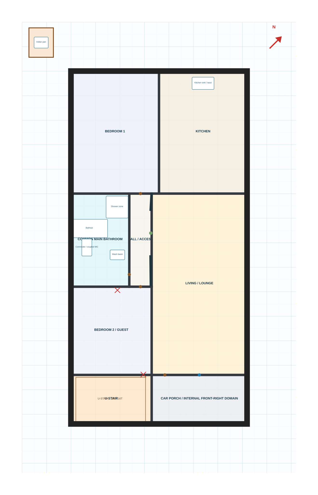
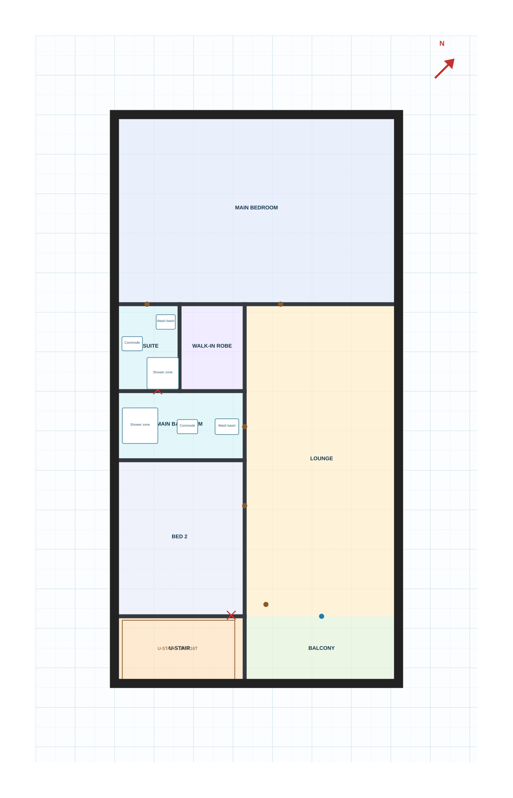
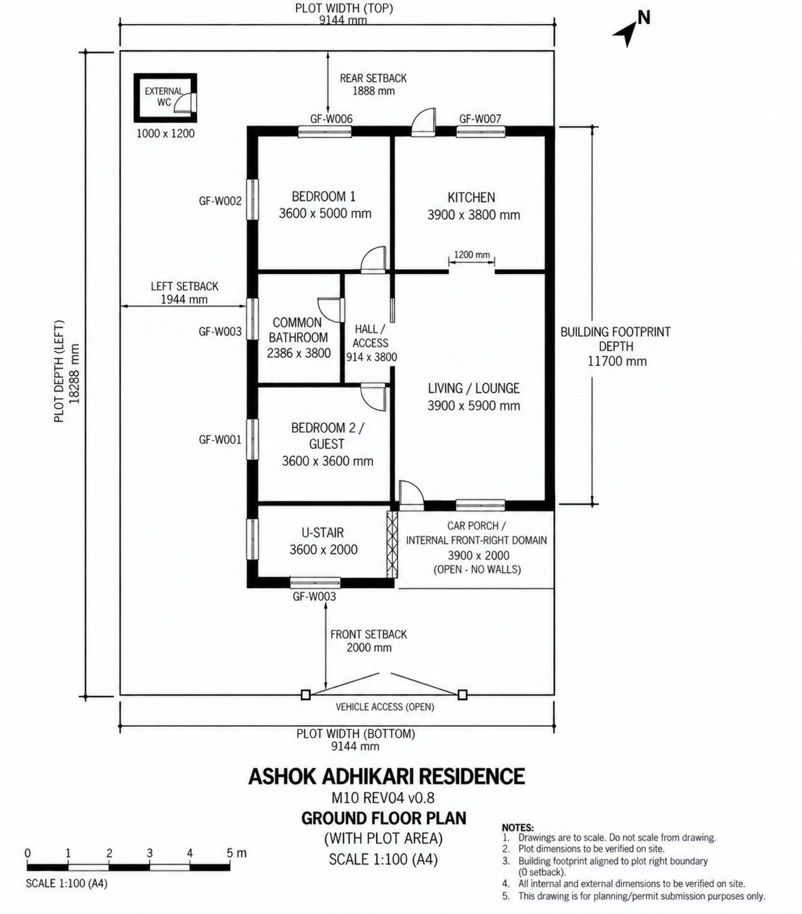
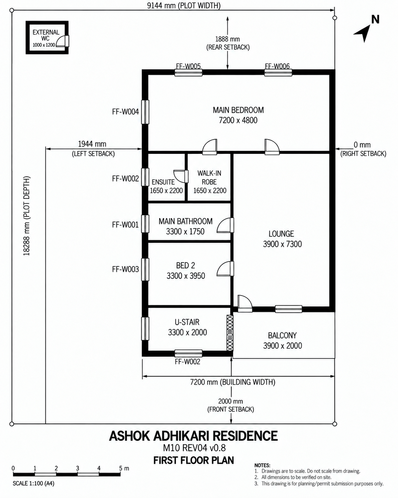

Ashok Adhikari
Furnished architectural scheme · coordination edition 02
An exact 7.20 × 14.40 m outer envelope, real door and window apertures, a coordinated stair, furnished rooms and dimensioned plans. Built from the Drive REV04 record, native trace and original sketch. Selected interior changes use the authorized 30% allowance and are recorded under QA & sources.
Explore the furnished house
Start with the ground floor. Switch to First floor, Exterior or Dimensioned plan; toggle cutaway walls, furniture and the callable grid.
32 hosted apertures · 230 / 100 mm walls · 610 mm plinth · 3048 mm storeys. Amber columns show proposed coordination positions, not designed structural sections. North points upper-right in the plans.
If 3D is unavailable, use . Browser edits stay in your browser until exported and reviewed.
Original input plans · v0.8
Original SVG bytes, retained for comparison. Use “Dimensioned plan” inside the studio for the current coordinated edition, including the corrected stair bay, connected walls and full door/window schedule. The Roof access preset shows the new continuation to the terrace.


Approved visual bookmarks
Exact approved image bytes. These images communicate visual intent; they do not override the deterministic geometry or establish construction approval.


What is exact, what changed
| Plot | 9,144 × 18,288 mm |
|---|---|
| Building envelope | 7,200 × 14,400 mm · 103.68 m² bounding rectangle; includes open porch/balcony |
| Site origin | [1,944, 2,000] mm |
| Setbacks in REV04 | Left 1,944 · right 0 · front 2,000 · rear 1,888 mm |
| Wall thickness | External 230 · internal 100 mm |
| Current template | Shared AAD multistorey editor · CAD-owned domain template |
Coordinated in this edition
- Outer wall faces now fit the exact 7200 × 14400 mm envelope.
- Duplicate hall wall removed; all junctions share coordinates.
- 32 door/window apertures physically cut through the 3D walls, including the 203 mm kitchen vent.
- Stair bay 4290 × 2200 mm: width +30%; FF depth +29.4%. Two 900 mm flights, 250 mm treads, full 900 mm landings and a real upper-floor void.
- Ground and first-floor entry doors moved onto actual walls; stairs access the porch/balcony independently.
- Source car body retained and OEM mirrors included: 2012 mm mirror width exceeds the 2000 mm transverse strip. That parking option is not an operational fit; the 2943 mm right approach does not fix the mirror/door/turning constraints.
- Furniture, sanitary fixtures, kitchen, floors, entry steps, glazing and guards added as explicit coordination objects.
Still outside this architectural scheme
- Designed column sections, beams, foundations, reinforcement and structural analysis. Amber column glyphs are not accepted member sizes.
- Municipal acceptance of the zero-right setback and external WC position.
- Final stair/guard/waist-slab design, finished headroom certification and vehicle turning/gate operation.
- Final MEP, drainage stacks, electrical layout and manufacturer selections.
- A new occupied top-floor layout is excluded. Roof access is now modeled with 18 risers, a real roof void, a rear exit onto the terrace and 2400 mm enclosure clearance; structural supporting details remain unissued.
Template and automation used
The same CAD-owned AAD multistorey studio loads this project manifest. Reusable wall subtraction makes openings real; the presentation layer supplies furniture and explicit coordination objects. GitHub Actions validates and builds the static site; GitHub Pages serves it.
Nepal / Pokhara code dictionary · Memory Wall & stable document versions